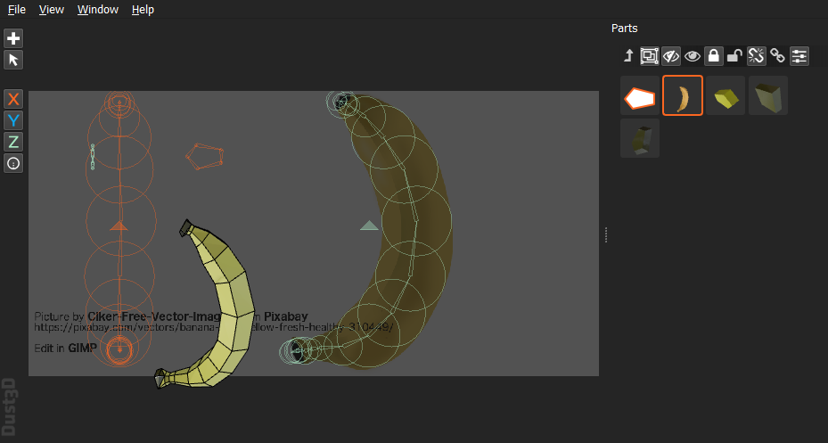
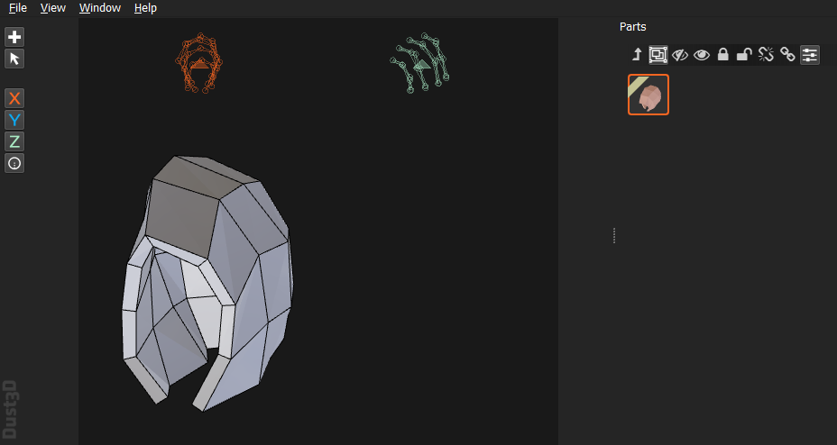
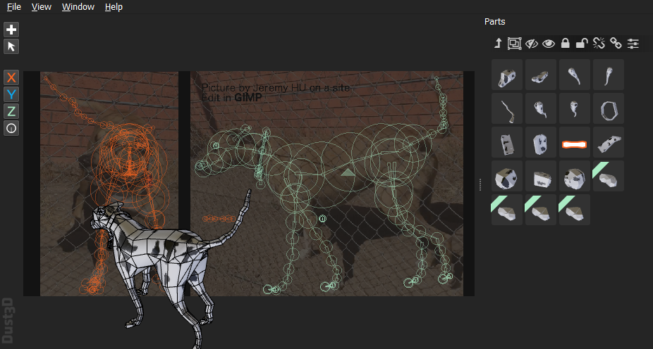

| Shortcut | Description |
|---|---|
| Transformation | |
| [ (Bracket Left) | Scale down (Distance between nodes) |
| ] (Bracket Right) | Scale up (Distance between nodes) |
| - (Minus) | Scale down (Node radius) |
| = (Equal) | Scale up (Node radius) |
| , (Comma) | Rotate counterclockwise |
| . (Period) | Rotate clockwise |
| Movement | |
| Left | Move to the left |
| Right | Move to the right |
| Up | Move upwards |
| Down | Move downwards |
| Select | |
| E | Switch selected profile from front to side, and side to front |
| F | Select hovered node's part on Parts list |
| H | Show/Hide selected nodes |
| Render | |
| W | Toggle wireframe |


